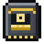

Crafting and automation: pages
Crafting and automation
Schematics
Schematic Cards and Encoded Schematics, how the Schematic Encoder writes crafting and processing recipes (with fluids and gases), and the Resource Entry stand-in.
On this page
A schematic is a recipe the network can carry out on its own. You write it onto a blank  Schematic Card at a
Schematic Card at a  Schematic Encoder, which turns the card into an Encoded Schematic, and put the schematic in a machine that can carry it out. From then on the network knows how to make that item: it shows as craftable in terminals, and any Scheduler on the network can use it.
Schematic Encoder, which turns the card into an Encoded Schematic, and put the schematic in a machine that can carry it out. From then on the network knows how to make that item: it shows as craftable in terminals, and any Scheduler on the network can use it.
Schematic Cards#
A Schematic Card is blank. Four come from one craft:
encodedlogistics:schematic_card
There are two kinds of Encoded Schematic, written from the same blank card. Both stack to 1.
| Schematic | Holds | Carried out by |
|---|---|---|
 Encoded Schematic (Crafting) | A crafting-table recipe: up to 9 items in a 3 × 3 grid, one each, and the result | A Fabricator, Fabrication Server or Fabrication Blade |
| Encoded Schematic (Processing) | Up to 9 inputs and up to 3 outputs, each with an amount; items, fluids or gases | A Gateway, next to the machine that does the work |
A schematic's tooltip lists what it makes and what it takes. Hold Shift and its icon shows what it makes.
Neither has a crafting recipe: they come only from the encoder. There's no way to wipe one back to a blank card, but the encoder can write over it.
The Schematic Encoder#
The Schematic Encoder is a cable part: put it on a Network Cable or on a block face beside one, as other terminals (see Cable parts). It's an Access Terminal with an encoding section underneath, so you can see and take from the network while you write. It uses storage.terminalLanes (default 1) lane and drains storage.terminalDrain (default 0.5) FE a tick.
encodedlogistics:schematic_encoder
Screenshot needed
The Schematic Encoder screen in Processing mode with a recipe for an Arcforge or vanilla machine: three inputs including a fluid entry, one output, a blank card in its slot
docs/site-src/images/crafting/schematic-encoder.png · 1280x720
The encoding section has:
- a 3 × 3 ghost grid for the inputs (ghost slots: they show an item but hold nothing real);
- in Processing mode, 3 ghost output slots;
- a mode button (Crafting or Processing), Clear and Encode;
- two real slots: blank cards in, and the encoded card out.
Crafting mode#
Put one item in each grid position as you would on a crafting table. The encoder shows the result the crafting table would give (you can't change it). Entries are items only, one each.
Processing mode#
For anything that isn't a crafting-table recipe: a furnace, the Lithography Press, another mod's machine. Set the inputs and up to three outputs, with amounts:
- Items: 1 to 64. Scroll or right-click an entry to change it; Shift changes it by 10.
- Fluids and gases: up to 1,000,000, 1,000 mB (a bucket) to start with. Scrolling steps by 100 mB, or 1,000 with Shift.
- To add a fluid or gas, right-click an empty slot to pick one from a list, or click it with a filled bucket, tank or gas container.
Gases are those Arcforge provides (see Arcforge).
Encoding#
Press Encode with a blank card in its slot: the card comes out written, in the encoded slot. Put an existing schematic in the encoded slot and it loads into the grid for editing; Encode then writes over it.
With JEI, the transfer button on a recipe fills the ghost grid (and the outputs, for processing). Shift-click moves blank and encoded cards to their slots, and anything else into the network.
Resource Entry#
A Resource Entry is how the mod shows a fluid or gas where an item would go: in a ghost slot, a Processing Schematic's inputs and outputs, a Gateway's stock row, a job's holdings. It's named after the fluid or gas, and its tooltip gives the amount, the type and the mod it's from.
You can't obtain one, and the network never stores one as an item: it stands for the fluid or gas itself.